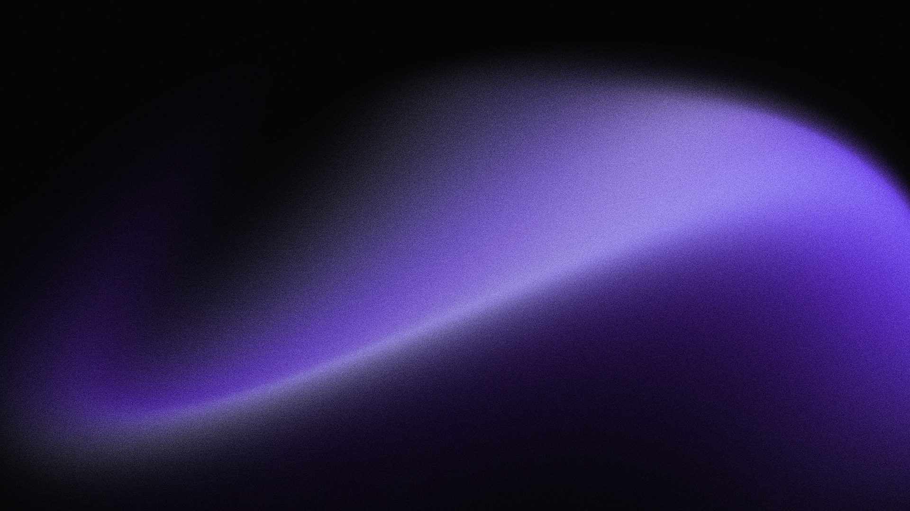
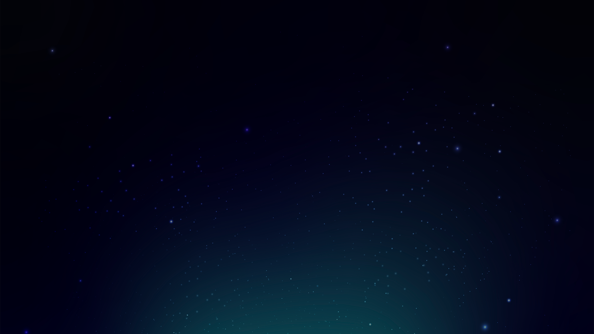
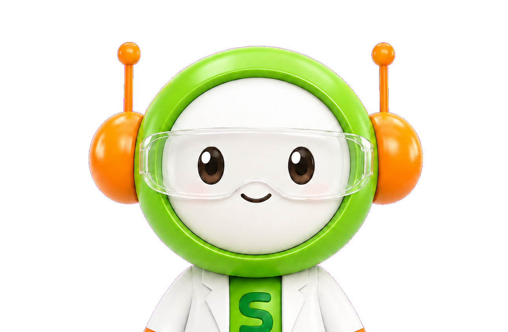

양이간
시간차
소리는
어디에서 들릴까요?

양이간 시간차
(Interaural Time Difference)
소리가 왼쪽 귀와 오른쪽 귀에 도달하는 시간 차이를 이용해 뇌가 소리의 방향과 위치를 판단하는 원리입니다.
체험방법
1
헤드셋을
착용해 주세요.
2
여러
방향에서 재생되는
소리를
들어보세요.
3
소리가
들려오는 방향의
버튼을
눌러주세요.
4
정답을
확인하고
원리 설명을
살펴보세요.
60
사운드를 체크해주세요.
좌우 스피커가 정상적으로 들리는지 확인해주세요.
왼쪽 ㅣ L
재생 버튼을
눌러주세요.
오른쪽ㅣ R
재생 버튼을
눌러주세요.
60

ROUND 1 / 5점수 : 0
A
B
C
D
E

소리가 발생한 지점은 어디일까요?
정답입니다!
오답입니다!
60

양이간 시간차 체험 완료!
양이차의 원리를 알아보고 체험을 완료해주세요.
나의 결과
0
0 / 5
실생활 속
양이차
· 오른쪽에서 이름을 부르면, 소리가
오른쪽 귀에 먼저 도달하고 왼쪽 귀에는 약 0.6ms 늦게 도달합니다. 이 차이로 뇌는 소리의 방향을 판단합니다.
· FPS 게임에서 적의 발소리 방향을 판단할 수 있는 것도 이 원리 덕분입니다. 게임 사운드 엔진은 ITD를 시뮬레이션하여 입체 음향을 구현합니다.
· 올빼미는 양쪽 귀의 높이가 다르게 배치되어 상하 방향까지 소리로 판단할 수 있으며, 이는 ITD의 생물학적 진화 사례입니다.
· FPS 게임에서 적의 발소리 방향을 판단할 수 있는 것도 이 원리 덕분입니다. 게임 사운드 엔진은 ITD를 시뮬레이션하여 입체 음향을 구현합니다.
· 올빼미는 양쪽 귀의 높이가 다르게 배치되어 상하 방향까지 소리로 판단할 수 있으며, 이는 ITD의 생물학적 진화 사례입니다.